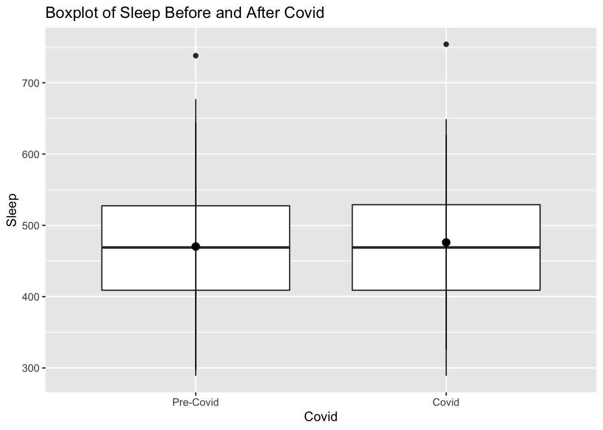
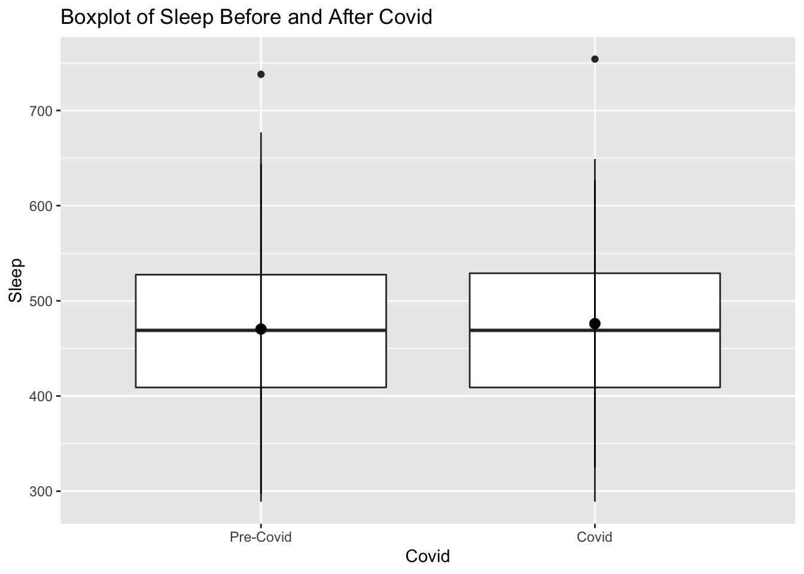

Introduction
The dataset I’m using for this project is a year of data collected on my fitness and sleep activity through my FitBit. I’ve always enjoyed looking at my FitBit stats in the app I use, but I wanted to conduct a more thorough analysis of my activity over the past year (October 2019-September 2020). Some of the important variables in this dataset are: date, day of the week, steps, floors, distance, calories burned, calories burned from activity, weight, and minutes of sleep. I generally wear my FitBit throughout the day and when I sleep, so it is almost always tracking my activity. Although my FitBit tracks heart rate, that data was unavailable. However, there are multiple variables that are based off heart rate such as minutes sedentary, light activity, vigorous activity, and calories burned from activity. I would like to address the following overarching question and sub-questions for this analysis:
Main Question:
How does my personal FitBit data characterize multiple markers of health and wellbeing?
Sub-questions:
1.) How did the Covid-19 pandemic affect my health in terms of activity, sleep, and weight?
2.) What days of the week am I most active and get the most sleep?
3.) How are my activity, weight, and sleep related to each other?
Methods
I downloaded this data from the FitBit website, which has a dashboard of my data and the ability to export data. I had to download each individual month and then combine it into one excel spreadsheet. I was originally going to do this in R, however, the spreadsheets were not consistent and it made sense to first make a complete dataset and then read it into R and complete the data cleanup and wrangling. In Excel, I added ID (days 1-366), as well as day of the week (Monday, Tuesday, Wednesday).
After installing/loading appropriate libraries and reading in the dataset, I checked the summary statistics for all relevant variables. I noticed that variables with commas in the numbers (e.g steps are generally 1,000+) were read as character variables rather than integers in R. Thus, I converted these to numeric, and also changed the date variable which was a simple character class into a date class.
I then made various new categorical variables:
Activity based on calories burned in a day. This was split into 4 factors determined by quarter quantiles and resulted in the following evenly split values: very high activity (>2,471 cals), high activity (2,184-2463 cals), average activity (1,979-2,183 cals), and low activity (<1,972 cals).
Step count, which was based on my own personal interpretation/goals of steps I like to achieve in a day: very high step count (>15,000), high step count (10,000-15,000), average step count (5,000-10,000) and low step count (<5,000). I had a high step count the greatest number of days (N=158). Additionally, I changed any value below 1,000 steps to missing, since this indicates that I was not wearing my FitBit that day.
For sleep, I made 3 categories which were based on guidelines which indicate 7-9 hours of sleep is ideal. These categories were: short sleep time (<7 hours), ideal sleep time (7-9 hours), and long sleep time (>9 hours). I also noted that the lowest value of sleep was 93 minutes, or roughly 1.5 hours. Since this variable is a sum of all sleep throughout the day, it is hard to believe that I only got 1.5 hours on a given day. More likely, I wasn't wearing my fitbit during a time when I was sleeping, or it died during my sleep, so it didn't capture the full data. For this reason, I converted improbable values that lie in the lower 5% of the data, which is 289 minutes, or almost 5 hours to missing. The maximum is 754 minutes, or 12.5 hours, which is entirely possible for me, given that I know my sleeping/nap pattern.
Finally, I created two new variables-- one extracting just the month from the date variable, and the other is a binary variable that is "Pre-Covid" and "Covid". I set "Covid" to start March 14, 2020 and has continued until the present/end of the dataset (through September). Dates before March 14th are considered pre-Covid.
For data exploration, summary statistics and graphs I used a mix of frequency tables (with chi sq), correlation analysis, t-tests, box plots, scatterplots, and barcharts.
Preliminary Results
Exploratory Statistics
## [1] 0.7401425
## activity_level Average Activity High Activity Low Activity Very High Activity
## steps_level
## Average Step Count 34 23 31 10
## High Step Count 49 64 2 43
## Low Step Count 8 1 33 1
## Very High Step Count 0 2 1 39
## Call: xtabs(formula = ~steps_level + activity_level, data = fitbit)
## Number of cases in table: 341
## Number of factors: 2
## Test for independence of all factors:
## Chisq = 243.42, df = 9, p-value = 2.436e-47
##
## Welch Two Sample t-test
##
## data: steps by covid2
## t = 1.8398, df = 328.92, p-value = 0.06669
## alternative hypothesis: true difference in means is not equal to 0
## 95 percent confidence interval:
## -59.9292 1791.2625
## sample estimates:
## mean in group Pre-Covid mean in group Covid
## 10775.333 9909.667
##
## Welch Two Sample t-test
##
## data: weight by covid2
## t = 15.35, df = 237.91, p-value < 2.2e-16
## alternative hypothesis: true difference in means is not equal to 0
## 95 percent confidence interval:
## 4.471655 5.788385
## sample estimates:
## mean in group Pre-Covid mean in group Covid
## 141.7007 136.5706
##
## Welch Two Sample t-test
##
## data: mins_asleep by covid2
## t = -0.59836, df = 261.71, p-value = 0.5501
## alternative hypothesis: true difference in means is not equal to 0
## 95 percent confidence interval:
## -24.68429 13.17861
## sample estimates:
## mean in group Pre-Covid mean in group Covid
## 470.3409 476.0938
##
## Welch Two Sample t-test
##
## data: calories by covid2
## t = 4.4842, df = 362.63, p-value = 9.835e-06
## alternative hypothesis: true difference in means is not equal to 0
## 95 percent confidence interval:
## 108.5279 278.0709
## sample estimates:
## mean in group Pre-Covid mean in group Covid
## 2327.061 2133.761
I first wanted to explore the relationship between calories burned and step count. I tested this using a correlation on the numeric data, as well as a frequency table with chi sq. The correlation was moderately strong (r=0.75). The frequency table showed it is clear that when there is a low or very high step count, that corresponds with low or very high activity based on calories. However, calories burned and step count aren't necessarily always related. I believe this is because there are other forms of activity (yoga, weightlifting, etc) that I sometimes do which do not produce a lot of steps, but do increase heart rate which increases calories burned.
I also found based on t-tests using covid as the grouping variable, that there was a significant difference of weight during and before covid, with covid resulting in me having less average weight. The mean step count was trending on significance (p=0.06), with less average steps taken during Covid than before Covid. My calories burned were significantly less during Covid than before. Minutes asleep did not significantly differ pre-covid and during covid.
Graphs and Plots
Variables By Date and Covid
 

Variables by Weekday

Associations between variables
Conclusions
The data show very interesting patterns about my activity and sleep throughout the last year. For example, I have on average taken less steps during covid than before, and my calories burned have been significantly less, although my sleep has not been affected. My weight has gone down during Covid, despite less steps and less activity. I believe this is due to nutrition and eating healthier/tracking my calories and making a distinct effort to lose weight. Still, it is interesting that I used to burn many more calories but have lost significant weight with less activity. I also have switched exercises from jogging/running on the treadmill and weightlifting at the gym pre-covid, to taking walks around my neighborhood and yoga during covid, which could explain why overall I'm burning less calories (heart rate is not as increased because the during covid activities are less vigorous). Additionally, although I am still walking around my neighborhood, I am doing considerably less walking to and from school, meetings, etc., since I am mostly at my home.
The graphs show that I am most active on Fridays (using all dates), which makes sense because I usually work out the most on a Friday, and then would generally go out and walk around the town (pre-covid), which required a lot of steps. I sleep most on Mondays, which also makes sense because I am usually tired from the weekend, and sleep a lot Sunday night- Monday morning, and then occasionally nap on Monday as well.
It would make more sense if my weight and activity were more related (ie higher step count/calories burned= less weight), however, as previously mentioned there were nutrition factors that affected my weight, which goes to show nutrition is very important in losing weight even if you have a lot of physical activity! It did look like there might be some differences in sleep category based on calories burned, so I will need to explore that later.
Moving forward, I would like to conduct more concrete analyses of this data to determine significance. I also might incorporate an LA weather dataset and see if weather relates to my step count. I know that when it has been really hot outside I haven't been going for walks, and I think that would be interesting to track. I also could potentially scrape my fitbit data for exercise data (e.g runs, jogs, walks, weightlifting, yoga), and make a categorical variable out of that, and then explore differences between those exercises and calories burned. There are additional variables such as calories burned due to light activity, moderate activity, and physical activity which could be interesting to look at in relation to exercise. Finally, I think it would be interesting to code this data for events such as holidays, vacations, trips, etc., to see if things like Thanksgiving or being home for Winter Break leads to less activity.